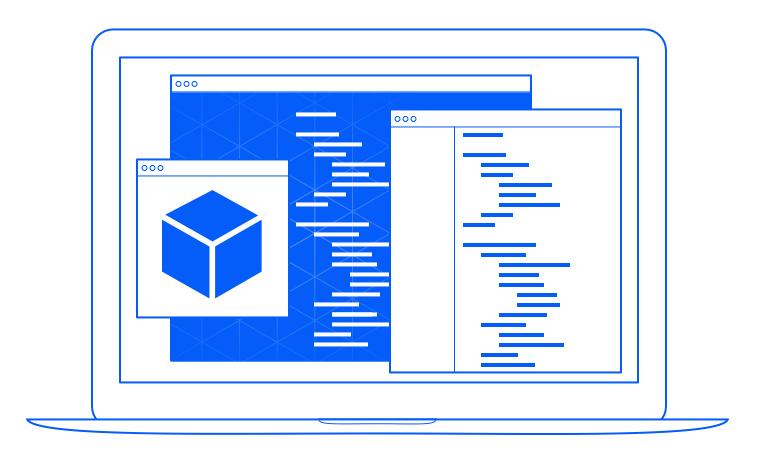

It is a Multi-Touch book about 3D graphics, with 3D graphics. Having interactive 3D objects on the pages, right next to the text that explains them, can be both fun and illustrative.

3D Graphics with Scene Kit is an interactive book about Apple’s high level 3D rendering framework for Mac OS X and iOS. It is written by me, David Rönnqvist, and is available for pre-order from the iBooks Store.
Scene Kit is a high-level, Objective-C framework for 3D rendering. It is a peer technology to other graphics technologies like Core Image and Core Animation. As an OS X or iOS developer, this means that you get to work with a lot of familiar concepts and frameworks.
Scene Kit is built on top of OpenGL (Open Graphics Library), the open standard for 3D graphics. Even though it’s a high-level framework, it allows you to drop down to lower abstractions when you want more detailed control, all while still using higher abstractions everywhere else.

You can read the book on your Mac and your iPad. If you are running the latest developer tools, then you can also read this book on your Mac. If you are running iOS 7 or later on you iPad, then you can enjoy this book on-the-go.
|
It is a Multi-Touch book about 3D graphics, with 3D graphics. Having interactive 3D objects on the pages, right next to the text that explains them, can be both fun and illustrative. | |
|  |
Full sample code for all of the chapters are available both online and in the book, at the end of each chapter. You can end the chapter by seeing how the pieces tie together and work with the book right next to your IDE. |
I’ve been working on this book for quite some time now and have realized that making a comprehensive first release meant that it would take longer before any of the content would get into your hands. Instead I’m making a first release with the content that I consider essential and then, through the wonders of digital only publishing, plan on releasing updates with more content over time. This doesn’t mean that the first version will sacrifice on quality. I’m still trying to realize my vision of a book on 3D graphics programming.
Scene Kit got many exciting additions this year: physics simulation, particle effects, support for deferred rendering and perhaps most excitingly iOS support. These new significant additions but not essential for the first release of the book. Even though the first release of book doesn’t explicitly deal with Scene Kit on iOS, almost everything what the book covers work the same on both OS X and iOS (mouse events vs. touch events being one exception).
Some of the new additions to Scene Kit makes it suitable for causal 3D games but that is not all that it’s good for. Part of what I think makes Scene Kit so attractive is how well it integrates with other frameworks. This makes it a good candidate for casual 3D in a 'regular' application as well.
Scene Kit is very easy to get started with and I will explain the concepts behind 3D graphics as the book progresses. You don’t need any 3D experience but it’s good if you have done some basic graphics programming on either OS X or iOS.
Part of Scene Kit is the simplicity and part is the integration with other frameworks like AppKit, Core Animation, etc. Even if you’ve done 3D graphics before, using it together with these frameworks will be new and interesting. You may also note that almost a third of the book covers advanced topics like GLSL and OpenGL. I’m sure you’ll find something that you like there.
Yes, a little bit. There is always going to be some maths involved and I will do my best to explain it.
You can pre-order it today from the iBooks Store. The first release is expected just in time for Christmas.